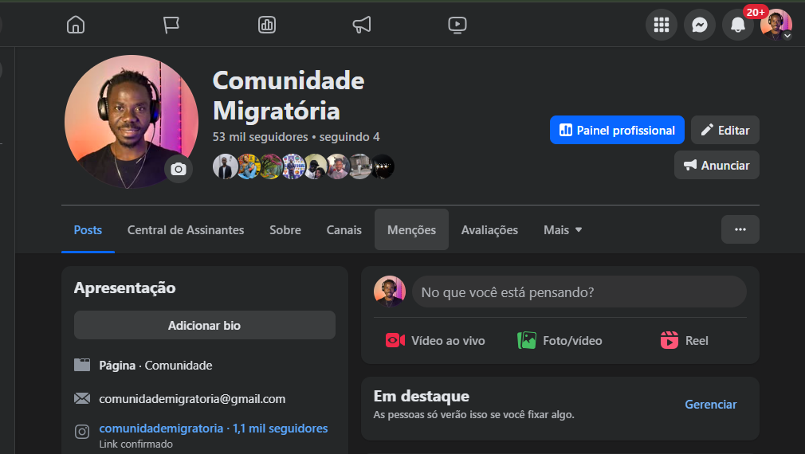
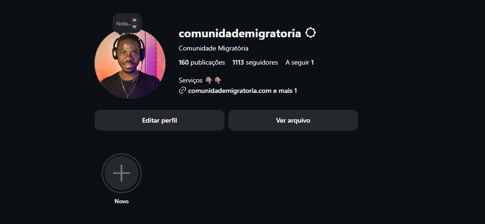
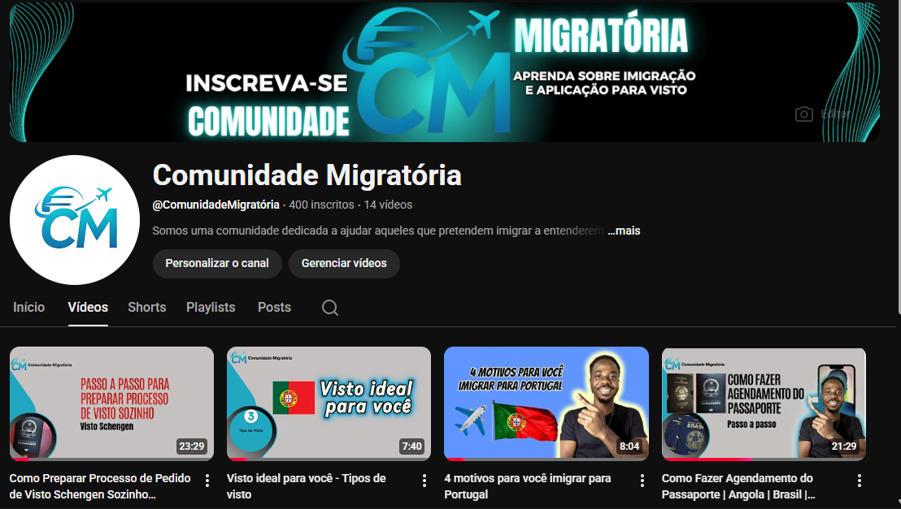

A Comunidade Migratória está aberta a parcerias
Se você pretende firmar uma parceria, envie a sua proposta para o email comunidademigratoria@gmail.com.
Com mais de 130 mil seguidores nas redes sociais, podemos ajudar o seu negócio a chegar para mais pessoas de diversos lugares do mundo.
TikTok
Com mais de 80 mil seguidores no TikTok, a Comunidade Migratória é uma das maiores referências em informação migratória na plataforma. Nossa audiência é altamente engajada e busca ativamente por conteúdo relacionado a vistos, imigração, estudo e trabalho no exterior.

TikTok da Comunidade Migratória
A Comunidade Migratória também está presente no Facebook, onde contamos com uma comunidade ativa de mais de 53 mil seguidores. Nossa página é um espaço para compartilhar notícias, dicas e informações relevantes sobre migração, com um público totalmente engajado.
Facebook da Comunidade Migratória
No Instagram, a Comunidade Migratória alcança mais de mil seguidores, oferecendo conteúdo visual e informativo sobre processos migratórios, vistos e dicas para quem deseja estudar ou trabalhar no exterior. Nossa presença na plataforma permite uma conexão direta com nosso público, facilitando o compartilhamento de informações valiosas.
Instagram da Comunidade Migratória
YouTube
Nosso canal no YouTube oferece vídeos detalhados sobre processos migratórios, dicas para vistos, experiências de migrantes e muito mais. A plataforma nos permite criar conteúdo educativo e envolvente, alcançando uma audiência diversificada interessada em migração.
YouTube da Comunidade Migratória